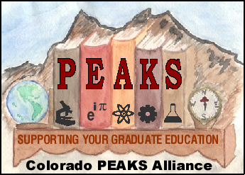
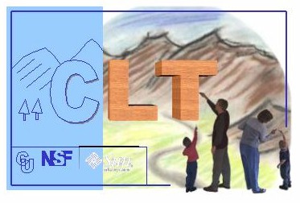
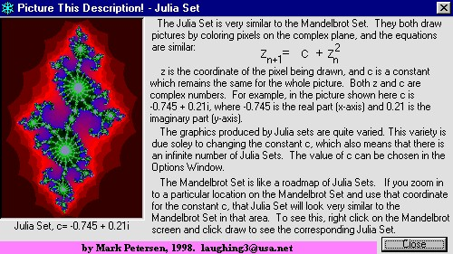
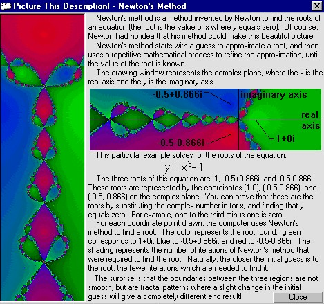

Scientific VisualizationOne of my hobbies is graphic design for scientific visualization, logos, and webpages. In the summer of 2002 I mentored two students in the NCAR SOARS program for undergraduate scientists. We used Matlab to produce 2D and 3D visualizations of global climate model data, including stereoscopic movies in NCAR's Visualization Lab.
Wind speed at 189 millibars, which is about 12 km above the surface. The yellow to red colors indicate the fasted flows, which occur at mid-latitudes and indicate the position of the jet stream. These plots are not from observations, but were produced by NCAR's Parallel Climate Model. The jet stream is caused by the temperature difference between the equator and the pole. The jet stream is strongest in the winter of each hemisphere because the equator to pole temperature difference is greatest in the winter. This effect can be seen by the oscillation of strong winds between the hemispheres each year. This is the same data as the previous image, but in a three dimensional format. The red surfaces are isosurfaces of 35 m/s wind speed. This is like putting a red blanket around the wind which is greater than or equal to 35 m/s. The red tubes show the location of the jet streams, and the size indicates the strength. The yearly oscillations in the size of the tubes show that the jet stream is the strongest in the winter of each hemisphere. The isosurface at the top of the map is the polar jet, which occurs at higher elevation than the jet streams. This image shows the monthly surface temperature from 1950 to 2100 as calculated by NCAR's Parallel Climate Model. The top globe displays one month for each frame and the colors indicate relative warming or cooling. For example, January 2008 is compared to the average January from 1961 to 1990. Warmer locations are yellow and red, while cooler locations are blue. The middle graph shows the average global temperature relative to the 1961 to 1990 mean. The globes along the bottom are the average of the year 1950, 1975, etc. This model predicts an average global warming of 2 to 3 C over the next 100 years. Note that the globes become more yellow over the century. The top globe shows that global warming is accompanied by extreme events like the large red patches which indicate warming of 10 to 20 C. This output was created with a business as usual scenario, which assumes that greenhouse gas emissions continue growing at their current rates. Model scenarios where greenhouse gas emissions are reduced produce less warming. LogosMy wife, Kimberly, and I have made several logos for academic organizations and programs at the University of Colorado. Here are some samples. |
 |
 |
|  |  |
Chaos and FractalsBefore I went to graduate school I enjoyed creating mathematical images with Visual Basic on a PC. I wrote a program which could create the Mandelbrot set, Julia set, and initial condition map of Newton's method, and included menus to zoom and adjust the colors. My inspiration was the book "Chaos: Making a New Science" by James Gleick. The program still works on Windows PCs, and can be downloaded: chaos.exe (960 KB).  |